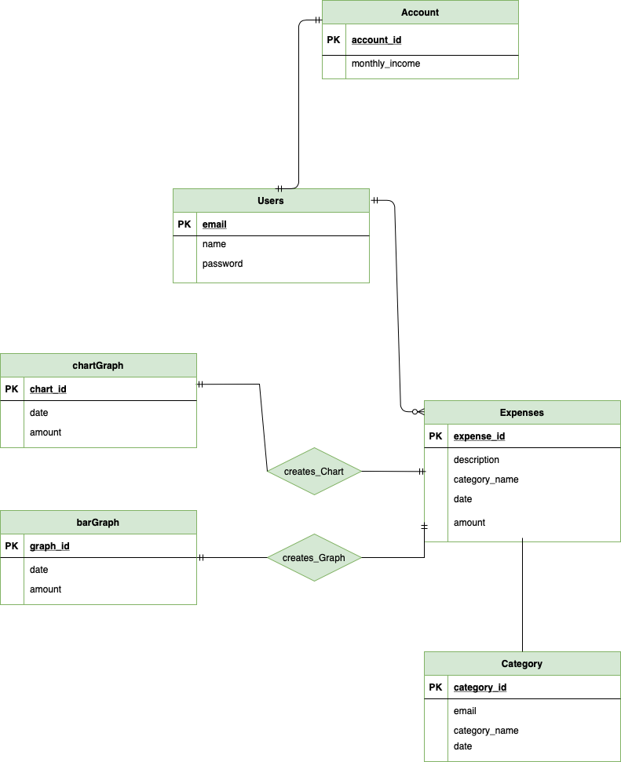

Full Stack Web App: Budgeting App
For my current project, I am developing a Budgeting Web App with my teammate, Phuong-Anh.
Our goal is to keep track of user expenses and provide monthly reports to show spending habits.
This week we focused on the Database Design that includes complete data schemas, all database logic & processing responsibilities, detailed CRUD operations for each data collection, and a list all database tooling and libraries in this article.
Schemas
Query Logic
- Selecting
- Remaining Balance: Take monthly_income (from users table) and subtract all amounts from expenses (from that month, using dates attributes) to show remaining balance
- Show Pie Chart: Calculate total amount spent (from expenses) of that month and calculate the percentage of each category from the total amount.
- Show Bar Graph: Calculate total amount spent from expenses for each month (from dates stated from Add Expense) to compare past 4 months.
- Inserting
- Add user input from Sign Up (email, username, password) to a list of established users (so an email can be registered once).
- The user’s input into Add Expense will be used to insert the data into a list.
- Filtering
- Filter individual user’s account and input to only show that specific user’s information
- Sorting
- User is able to sort the expenses list/chart by description, category, date, or amount
CRUD Operations
- Create
- CREATE TABLE user(email varchar(60) not null, name, password);
- Use similar format as above bullet for creations of tables: Expenses, Category, Pie Chart, and Bar Graph
- Read
- Show Expense History: select * from Expenses;
- Sorted Expense History: select * from Expenses order by amount ASC (or DESC)
- Similar query for sorting by other categories
- Update
- Pie Chart, Bar Graph
- Update chart/graph given new inputs from Add Expense
- Delete
- DROP TABLE user;
- Use similar format as above bullet for creations of tables: Expenses, Category, Pie Chart, and Bar Graph
Tooling & Libs
- MongoDB, MySQL
If you'd like to keep up with this project's progress check out my blog periodically for updates!